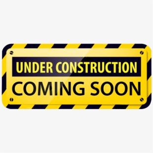
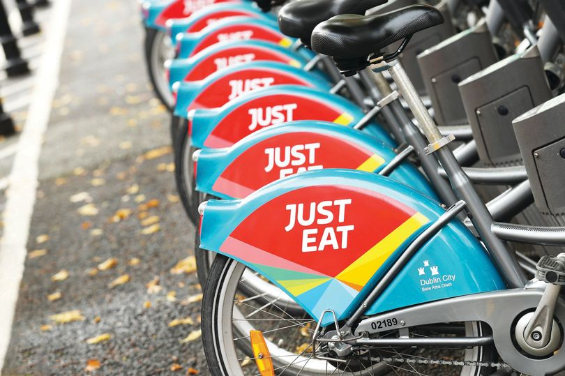

Please be aware of the following station closures to allow for construction work in the area...
(01/11/2019)

Fownes Street Upper - Station 14- closed from Saturday 17 Decemebr
Frederick Street South - Station 98- closed from Monday 4th November
North Circular Road - Station 112- closed from Tuesday 5th November
Just Eat gives 10% discount to customers as dublinbikes celebrates 10th anniversary of popular cycling scheme
(13/09/2019)

The dublinbikes scheme celebrates its 10th anniversary today and Just Eat are giving all customers 10% off if they pay by card.
It launched on 13 September 2009 and saw more than 11,000 people apply to join within its first two weeks.
When the service began as dublinbikes in 2009 there were 450 bicycles and 40 stations in Dublin city centre.
Today it is now JustEat dublinbikes and there are now 1,600 bicycles available at 116 stations.
Cycle for Good
(06/06/2019)
Just Eat dublinbikes has just launched their Cycle for Good campaign, aiming to raise €100,000 to help to alleviate homelessness in Ireland.
Cycle for Good will see Just Eat donate 10 cent to the Peter McVerry Trust for every journey taken on Just Eat dublinbikes from May 1st to July 10th 2019.
So hop on your bike and help raise funds for this brilliant cause while having a fun-filled day out.